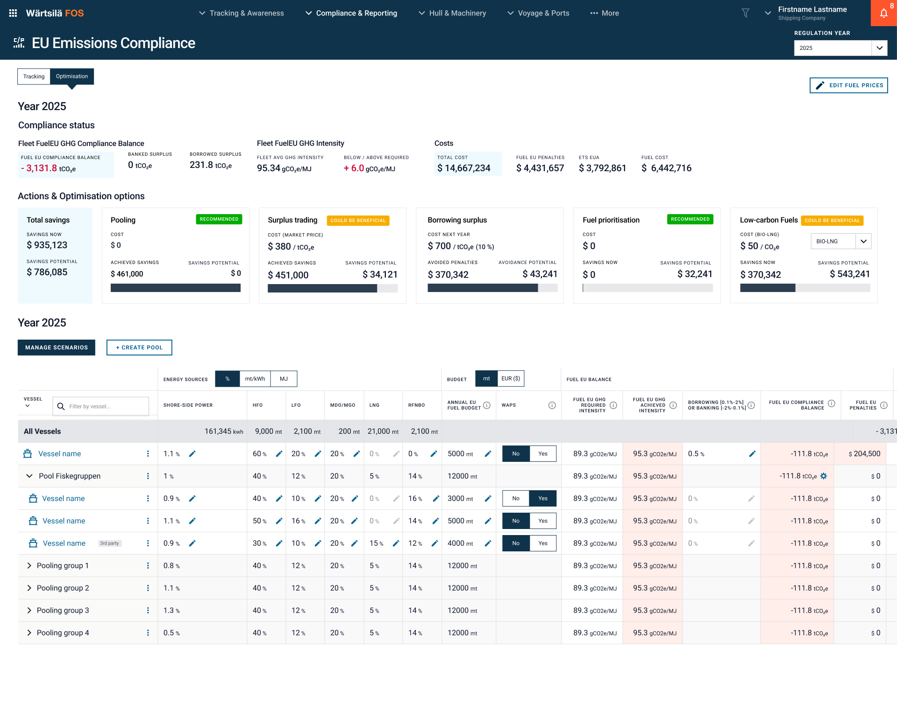
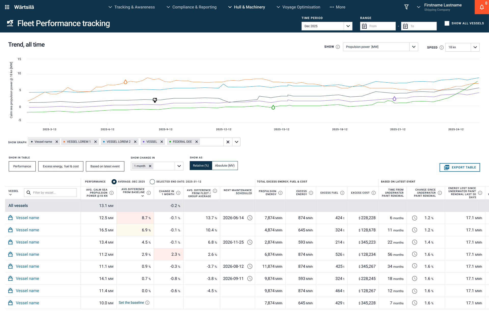
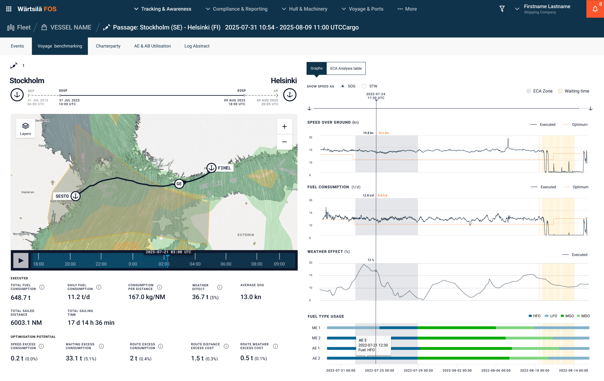
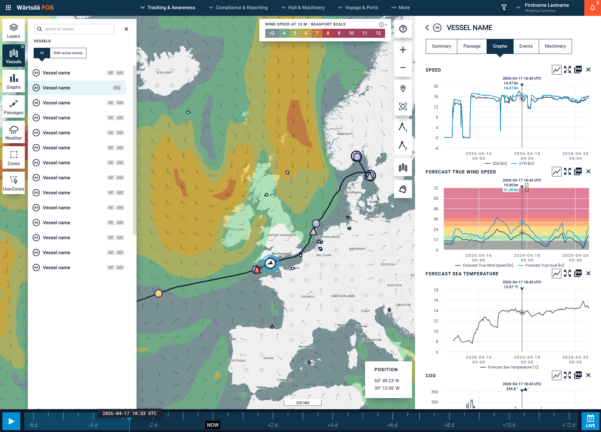

Datapohjaista ja käyttäjälähtöistä tuotesuunnittelua merenkulkualan globaaleille toimijoille
Wärtsilä FOS
Kansainvälisen laivaliikenteen reittien suunnittelu, seuranta ja raportointi sekä paljon muuta:
- Keskeisimpänä asioina ovat alusten suorituskyky ja polttoainetehokkuus sekä näihin vaikuttavat tekijät kuten sää ja aluksen kunto.
- Nopeuden ja polttoaineiden ym. teknisten mittareiden lisäksi mm. merenkulun vaatimustenmukaisuus kuten päästönormien noudattaminen sekä rahtisopimusten toteutumisen seuranta.
- Tukee Wärtsilän teknologian, kuten moottoreiden, myyntiä sekä hyödyntää datankeräysratkaisuja: pilvipohjaista analytiikkaa, tekoälyä ja automaatiota.
- Lue lisää palvelusta Wärtsilän sivuilta
Haaste
Asiakkaita, laivatyyppejä, käyttäjärooleja ja dataa on paljon
- Fleet Optimisation ‑ratkaisua käyttävät sekä laivalla että maissa toimivat käyttäjäryhmät, joiden tavoitteet, vastuut ja käyttötilanteet eroavat merkittävästi.
- Datan määrä on iso: järjestelmään tulee dataa antureiden, manuaalisen raportoinnin, sekä ulkoisten rajapintojen kautta.
- Risteilyalus ja rahtialus-asiakkaiden tarpeet ovat hyvin erilaiset. Myös rahtialuksia on montaa eri tyyppiä.
- Edellä mainituista asioista johtuen myös mahdollisuuksia uusille toiminnoille on paljon. Oleellisen tunnistaminen on tärkeintä.
- Tuotteen ja käyttökokemuksen hallinta uusien toiminnallisuuksen kasvun myötä vaatii kokeneen suunnittelijan.
Ratkaisu ja lähestymistapani
Oleellisinta tunnistaa globaalien asiakkaiden tarpeet sekä datan mahdollisuudet.
- Asiakaspalaverit loppukäyttäjien kanssa ja palautteiden vastaanotto eri kanavia pitkin.
- Tiivis yhteistyö tuoteomistajien ja asiakkaan liiketoiminnan asiantuntijoiden sekä data-ihmisten kanssa.
- Edellämainittujen sekä tiedonhaun ja opiskelun pohjalta kertynyt hyvä ymmärrys asiakkaiden teknisestä datasta ja sen mahdollisuuksista.
- Käyttäjätarinoiden kirjoittaminen sekä visuaalisten ja interaktiivisten käyttöliittymien prototyyppien suunnittelu.
- Keskeisiä tuotoksia jatkuvasti päivittyvän ja suodatettavissa olevan datan visualisoinnit monipuolisilla esitystavoilla.
- Ketterän designprosessin mukaisesti suunnitelmat esitellään asiakkaille ja tarvittaessa niitä iteroidaan ennen toteutusta.
- Design systeemin hyödyntäminen nopeuttaa työtä ja sitä kehitetään eteenpäin.
Lopputulos

Meriteollisuuden johtava konsepti
Maailman johtava meriteollisuuden ratkaisu, jota käyttävät sadat globaalit laivayhtiöt.
Auttaa laivayhtiöitä pysymään kehityksen ja liiketoiminnan kärjessä tukien oikeaan dataan perustuvia päätöksiä kunkin toimintaympäristössä.
Käyttäjälähtöinen datapohjainen tuote
Lopullinen tuote perustuu todellisiin käyttäjätarpeisiin kerättynä merenkulkualan asiakkailta ympäri maailman.
Poimii isosta datamäärästä oleellisimman tiedon helposti saataville ja se visualisoidaan käyttäjäystävällisellä tavalla.
Työnäytteitä




← Portfolioon